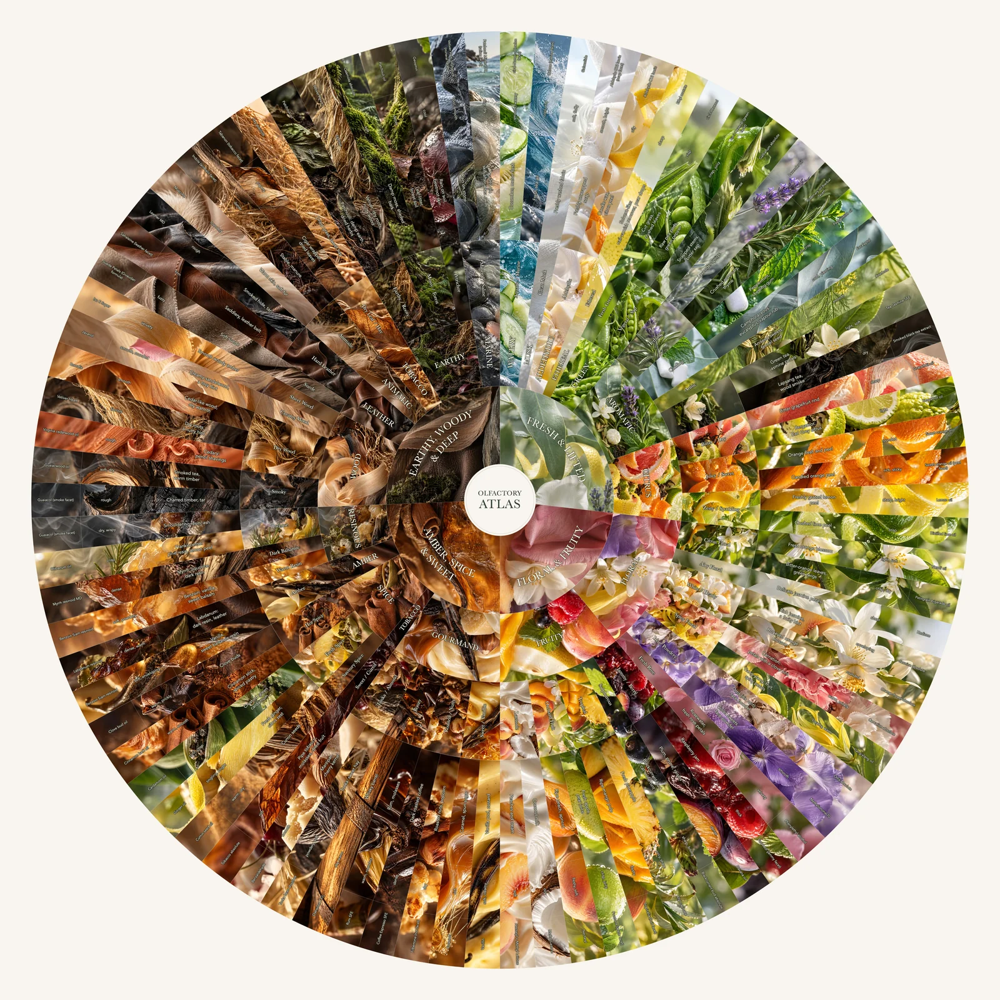

A photographic scent guide
A vocabulary for
what you smell.
Move from a broad impression to something familiar: crushed herbs, pencil shavings, soft suede, warm resin. Explore freely, or follow questions from a broad impression to the words that fit what you smell.

20 families · 82 scent possibilities · 130 compositions

Read more
A picture wheel for learning to smell.
The finished wheel is here to explore. The article explains where the idea came from, how the imagery and structure developed, and what this kind of scent guide can help you notice.
Read the story on ryannel.dev ↗
The wheel is a selective guide, not an exhaustive classification. Material references illustrate scent facets; they do not identify ingredients in the perfume you are smelling.
The making
Photographs, structure, language.
This repository contains the finished product and the ingredients for making it: the taxonomy, all 130 image prompts, generation briefs, reusable skill, editable SVG master and exploration code. The questions are built from the same local data as the wheel.
Browse the project on GitHub ↗
The skill and build recipe
Full-quality originals and working files
Provenance and source details